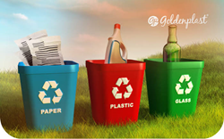
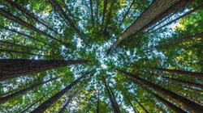

| Atividade | Descrição | Objetivo |
| Jogo da reciclagem | Colocar cada material no ecoponto certo | Aprender a reciclar |
| Dá uma nova vida! | Criar objetos novos através de materiais reciclados | Desenvolver a criatividade |
| Caça ao lixo | Encontrar e separar materiais em espaços exteriores | Manter o ambiente limpo e proteger a natureza |
Apesar de o Planeta Terra seja coberto de água, apenas uma pequena parte é água doce e está disponível para consumo humano.

Reciclar permite-nos aproveitar materiais que já foram usados e reduzir a necessidade de extrair novas matérias primas.

As árvores absorvem dióxido de carbono e libertam oxigéni. É nelas que vivem muitos animais.

Os painéis solares, que são uma forma de gerar energia, transformam a luz do sol em eletricidade, ajudando a reduzir a utilização de combustíveis fósseis.